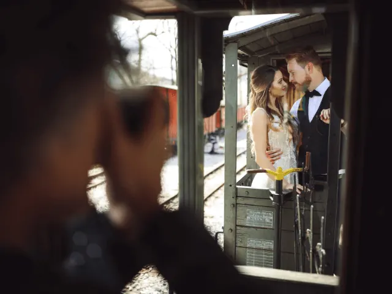

Partnerbijdrage
Laat je bruiloft op de gevoelige plaat vastleggen door een fotograaf
Gepubliceerd op 31 maart 2023, bijgewerkt op 26 mei 2025
Onderdeel van de gids Trouwen in Nijmegen en Fotografie in Nijmegen

Als je gaat trouwen, wil je later nog na kunnen genieten. Daarom is het zo belangrijk om een goede fotograaf te vragen om de mooiste plaatjes te vangen. En je kiest dan natuurlijk niet de eerste de beste. We nemen je daarom graag mee in de wereld van de bruiloftsfotografie.
Waarom is het belangrijk om een goede fotograaf in te huren op je bruiloft?
Het is een dag waarop je je liefde voor elkaar bezegelt en waarop je omringd wordt door vrienden en familie. Door deze dag op foto’s vast te leggen, kun je deze herinneringen levend houden. Bovendien kan het delen van deze foto’s met vrienden en familieleden die niet bij de bruiloft aanwezig waren, bijdragen aan het creëren van een blijvende verbinding.
Waar moet je op letten bij het kiezen van een fotograaf?
We hebben een lijstje voor je gemaakt, met punten om goed op te letten bij het kiezen van de perfecte fotograaf voor jullie trouwdag.
- Stijl: Bekijk het portfolio van de fotograaf en zorg ervoor dat hun stijl past bij wat je zoekt. Zoek je bijvoorbeeld iemand met een journalistieke stijl of wil je liever klassieke portretten?
- Ervaring: Kijk hoeveel bruiloften de fotograaf al heeft gefotografeerd en vraag naar hun ervaring. Het is belangrijk dat de fotograaf weet hoe hij of zij moet omgaan met verschillende situaties en locaties, zoals slecht weer of moeilijke lichtomstandigheden.
- Persoonlijkheid: Het is belangrijk dat je een goede klik hebt met de fotograaf, aangezien hij of zij de hele dag aanwezig zal zijn tijdens jullie bruiloft. Maak daarom een afspraak om elkaar te ontmoeten en te zien of jullie persoonlijkheden matchen.
- Prijzen: Bekijk de prijzen en pakketten van de fotograaf en zorg ervoor dat deze binnen je budget passen. Let ook op of de fotograaf extra kosten in rekening brengt voor bijvoorbeeld reiskosten of extra uren.
- Referenties: Vraag de fotograaf om referenties van vorige klanten en bekijk eventuele online reviews. Zo krijg je een beter beeld van de ervaringen van anderen met deze fotograaf.
- Contract: Zorg ervoor dat je een duidelijk contract hebt waarin alle afspraken en voorwaarden staan vermeld. Dit kan problemen voorkomen en zorgt voor een betere samenwerking tussen jullie en de fotograaf.
Welke bruiloftsfotografen raden wij aan in Nijmegen?
We hebben vast wat research voor je gedaan en hieronder hebben we een leuke lijst van goede fotografen die gespecialiseerd zijn in de bijzonderste dag: jouw trouwdag!
- Jaap Baarends: Zoals hij zelf zegt: “De vraag die ik altijd krijg is: waarom bruidsfotograaf? Omdat ik het geweldig vind om mensen te fotograferen die iets met elkaar delen. En bovendien vind ik een bruiloft een heerlijk evenement om aan mee te werken. Van de voorbereidingen, naar de ceremonie tot aan het feest, een dag speciaal voor jullie. Het voelt voor mij als een eer om dat tot een succes te maken!”
- Dario Endara: Dario Endara is een ervaren bruidsfotograaf die gespecialiseerd is in bruidsfotografie in Nijmegen en omgeving. Als Amerikaanse fotograaf woont hij al een aantal jaren in Nederland en heeft hij meer dan 150 bruiloften gefotografeerd. Dario Endara plant altijd een vrijblijvend kennismakingsgesprek in waarin hij jullie wensen voor de bruiloft bespreekt. Hij kan jullie helpen met het meedenken over hoe jullie bruidsfoto’s extra bijzonder kunnen worden gemaakt. Door zijn jarenlange ervaring als bruidsfotograaf kan hij jullie ontzorgen als het gaat om bruidsfotografie en zorgen dat jullie tevreden zijn met de foto’s van jullie bruiloft. Hij is beschikbaar om bruiloften te fotograferen in heel Nederland en Europa.
- Jeroen Savelkouls: Deze man begon met het fotograferen van bruiloften in 2015 nadat hij deze klus toevallig op zijn pad kreeg. Hij werd meteen verliefd op het werk en vond het geweldig om mensen blij te maken met mooie foto’s van hun grote dag. Naast bruidsfotograaf is hij ook journalist en heeft hij geleerd om te observeren en aandacht te besteden aan de details die elk verhaal uniek maken. Hij neemt deze ervaring mee in zijn werk als trouwfotograaf om tot de kern te komen en niet alleen op de grote lijn te letten, maar ook op de kleine details die het verhaal compleet maken.

Wat kun je allemaal doen met jullie trouwfoto’s?
Heel goed dat je straks een berg foto’s hebt laten maken, maar wat ga je ermee doen? We hebben een lijstje met leuke ideeën voor je samengesteld.
- Maak een album: Maak een fysiek album van je trouwfoto’s om te bewaren en regelmatig doorheen te bladeren. Het is een mooie manier om herinneringen aan je trouwdag levend te houden.
- Print en inlijsten: Kies enkele van je favoriete trouwfoto’s uit en laat deze afdrukken en inlijsten. Zo kun je ze op een prominente plaats in huis ophangen en er dagelijks van genieten.
- Maak een fotoboek: Maak een fotoboek van je trouwdag met behulp van online tools of software. Het is een mooie manier om je foto’s te presenteren en te delen met familie en vrienden.
- Maak een diavoorstelling: Maak een diavoorstelling van je trouwfoto’s en voeg muziek toe om een persoonlijke touch te geven. Je kunt deze delen met vrienden en familie via sociale media of op een speciale bijeenkomst.
- Maak een canvasafdruk: Laat een canvasafdruk maken van een van je favoriete trouwfoto’s om als kunstwerk aan de muur te hangen.
- Gebruik ze voor dankkaarten: Gebruik je trouwfoto’s om persoonlijke dankkaarten te maken om naar gasten te sturen die op je bruiloft aanwezig waren.
- Gebruik ze voor sociale media: Deel je trouwfoto’s op sociale media om je herinneringen te delen met vrienden en familie die er niet bij konden zijn.